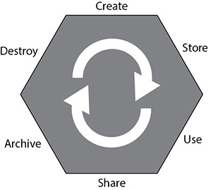
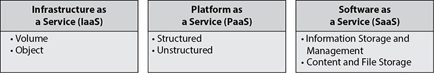
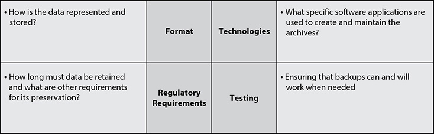

CHAPTER 3
Cloud Data Security
This chapter covers the following topics in Domain 2:
• The cloud data lifecycle
• How storage systems are different among cloud hosting models
• How to design security strategies for data protection within a cloud environment
• The process of data discovery and how it relates to data classification
• Privacy acts and how they relate to cloud environments
• The concepts of data rights management and information rights management
• The identification and collection of event data within a cloud environment, and how to leverage and analyze it for business value and regulatory compliance
The most important aspect of any application or system is the data contained within it; the data holds the most value for any company or organization. Although many of the principles of data security and protection are the same within a cloud environment as in a traditional data center, there are some differences and challenges unique to the cloud environment.
Describe Cloud Data Concepts
The cloud data lifecycle plays a crucial role throughout this domain, and all aspects of data management and security apply to some or all of the various phases.
Cloud Data Lifecycle Phases
The phases of the data lifecycle were covered at a cursory level in Chapter 2. However, a more thorough understanding of the various aspects, risks, and technologies at play in each phase is needed. For a quick review, the phases of the lifecycle are shown in Figure 3-1. Note that although the lifecycle is shown as a series of distinct steps, there is no requirement that data actually go through each step in the process; some steps in the lifecycle may be skipped altogether, repeated, or taken out of order.

Figure 3-1 The data lifecycle
Create
Although this initial phase is called “Create,” it can also be thought of as modification. In essence, any time data is considered “new,” it is in the Create phase. This can be data that is newly created, data that is imported into a system and new to that system, or data that is already present and modified into a new form or value. It is also the most appropriate time to determine the data is classified as secure. When data is created, its value and sensitivity are known and can be handled properly from the onset, as all additional phases build off this phase. It also is the most appropriate time to deal with data modification. The classification of data after modification should always be done as a new process, taking into account the state of the data after modification, not before modification, because the level of sensitivity may very well have changed during the modification process. Decisions made during the creation process as far as classification will impact all additional phases, beginning immediately with how the data is stored and protected. Security controls can be initially implemented at the Create phase as well, specifically in the form of technologies such as SSL/TLS with data that is inputted or imported.
Store
Immediately after the data is created, it must be stored in a way that is useable to the system or application (in many cases, this is an almost simultaneous and complementary process). Data can be stored in numerous ways. Storage methods include files on a file system, remote object storage in a cloud, and data written to a database. All storage of data must be done in accordance with the data classification determined during the Create phase. The Store phase is the first place where security controls can be implemented to protect the data at rest, and the Cloud Security Professional must ensure that all storage methods employ whatever technologies are necessary for its data classification level, including the use of access controls, encryption, and auditing. The use of appropriate redundancy and backup methods also comes into play immediately at the Store phase to protect the data on top of the security controls.
Use
The Use phase is where the data is actually consumed and processed by an application or user. At this point, because the data is being used, viewed, or processed, it is more exposed and faces increased chance of compromise or leak. At this time, the data will transition from data at rest to data in use, as it is being displayed in a web browser or other client, moving between the data and application layers or the presentation layer of an application, or just traversing through a network. Since the data is being viewed or processed, it also must be exposed in an unencrypted state, as opposed to sitting static in an encrypted database or data set somewhere in the Store phase. Allowing the data to be unencrypted also puts expectations on the client side for protection, both from being viewed and stored, once it has been released from its official storage system and exposed. We cover other data protection methods later in this chapter, but the exposing of data requires auditing and logging mechanisms to be in place as it is accessed for the first time. The Use phase is considered to be purely in a read-only mode because this phase does not cover modification in this sense; modification is covered in the Create phase of the lifecycle.
Share
In the Share phase, data is made available for use outside the system it was explicitly created on or for. This presents a big challenge for a system to ensure proper protections are in place once the data leaves the system and is shared externally. Unlike the Use phase, with the Share phase the data is being enabled for use by customers, partners, contractors, and other associated groups, and once the data leaves the main system, it is no longer under the security control mechanisms employed there. That being said, all is not lost as far as securing data once it leaves the environment. Technologies such as DLP (data loss prevention) and various rights management packages can be utilized to either detect additional sharing or attempt to prevent modification. However, neither method is completely secure or complete.
Archive
Archiving simply involves moving data to long-term storage, thus removing it from being active or “hot” within a system. The archiving process can range from moving data to a lower storage tier that is slower and not as redundant but still accessible from the system, all the way up to removing it from the active system entirely and placing it on different media altogether. In the latter instance, the data can be recovered and read by the system again, but typically will involve substantially more time, effort, or cost to do so. In many instances where the data is completely removed from the active system, it is stored offsite for disaster recovery reasons as well—sometimes even being hundreds or thousands of miles away. One of the more overlooked aspects of archiving data is the ability to retrieve and recover it as well.

CAUTION Depending on company policies or legal and regulatory requirements, some data may have a requirement to be archived and maintained for several years. As technologies change over time, so will backup and recovery systems. For example, if you have a requirement to keep data for seven years and you change backup systems after four years, you must maintain the ability to recover the older data from the previous system as well. Many times an organization will move onto the new system and decommission the old one, not realizing they are losing the ability to recover historical data. Although it may be possible to find a third party to do the recovery if needed, the costs can be significant, both in money and staff time. A strategy that many firms employ is to determine if the data can be exported from proprietary formats into a more flexible and interoperable format. However, that strategy also carries an inherent risk in protecting the integrity of data under regulatory rules, so special care must be taken and a full understanding of the requirements is essential.
Destroy
The Destroy phase of the lifecycle is where the data is either made inaccessible or permanently erased and protected, with the method and approach being based on the classification and sensitivity of the data. Many would not consider the simple deletion of data to actually be part of this phase, because this merely erases pointers but leaves the data very vulnerable to recovery. Using methods such as overwriting and cryptographic erasure is far more prevalent in a cloud environment, and is required by many regulations and laws, especially considering that physically destructive methods such as degaussing and shredding are not available within a cloud environment. The same requirements and methods apply to any long-term archiving solution as well. Special care also is required to oversee data sanitation requirements based on the type of cloud system involved. Whereas IaaS and PaaS tend to have storage dedicated more to a single customer in the case of volume storage, SaaS tends to be far more interconnected with data from across the entire platform. The Cloud Security Professional needs to pay particular attention to contractual and SLA terms within any type of cloud platform, but especially in SaaS.
Data Dispersion
Data dispersion is one of the key features of cloud architecture and one of the predominant factors in determining storage costs for a customer within a cloud environment.
Cloud systems are highly distributed across data centers and can span large geographic areas. Depending on the particular cloud provider, this can also include worldwide distribution of systems. This enables a cloud customer to potentially have their data replicated across geographic regions, mitigating the traditional problems posed by maintenance issues and disaster scenarios.
To what degree and extent data dispersion is used is typically a determining factor with services and costs for a cloud customer. A cloud provider may offer a base level of service where data is housed within a single data center or more localized storage, and then offer additional tiers for premium costs that will more widely disperse data throughout larger geographic areas and numbers of data centers. The data dispersion service offering can be a valuable component of disaster recovery and continuity contingency planning by an organization.
Design and Implement Cloud Data Storage Architectures
Each of the three hosting models with a cloud environment—IaaS, PaaS, and SaaS—uses its own unique storage methods, as shown in Figure 3-2. Each model also has its own unique challenges and threats.

Figure 3-2 Cloud storage types by hosting model
Storage Types
Different storage types are typically used and offered based on the type of cloud platform being used and the special considerations and support models that each entails.
IaaS
Although IaaS has the most freedom and support requirements for the customer, the same basic tenants of measured service and virtualization come into play pertaining to storage. Storage is allocated and maintained by the cloud provider based on the specific needs and requirements of the customer. With IaaS, storage falls into two basic categories: volume and object.
Volume Volume storage is a virtual hard drive that is allocated by the cloud provider and attached to the virtual host. The operating system sees the drive the same way it would in the traditional server model and can interact with the drive in the same way. The drive can be formatted and maintained as a file system in the traditional sense and utilized as such. Most cloud providers allocate and maintain storage using the volume method for IaaS.
Object Object storage is file storage that operates as an API or a web service call. Rather than being located in a file tree structure and accessible as a traditional hard drive, files are stored as objects in an independent system and given a key value for reference and retrieval. Many cloud systems use object storage for virtual host images and large files.
PaaS
The storage design for PaaS is quite a bit different from IaaS because the cloud provider is responsible for the entire platform and the customer is responsible for the application itself. This puts responsibility for the storage systems under the cloud provider as well. With PaaS, storage falls into the categories of structured and unstructured.
Structured Structured data is organized and categorized data that can easily be placed within a database or other storage system that is created with rule sets and a normalized design. This data construct allows the application developers to easily import data from other data sources or nonproduction environments and have it ready to use for the production systems. The data is typically organized and optimized for searching technologies to use without the need for customization or tweaking. This allows the cloud customer to fully realize the power and potential of cloud hosting for their applications. However, special attention is required on the part of the application developers and Cloud Security Professional to avoid vendor lock-in.
Unstructured Unstructured data is information that cannot be used or easily used in a rigid and formatted database data structure. This can be because of the size of the files or the types of files. Typically included in this category are multimedia files (videos, audio), photos, files produced by word processing and Microsoft Office products, website files, or anything else that will not fit within a database structure.

EXAM TIP There will almost certainly be questions pertaining to which storage types are part of which service type, either with direct identification and matching or by asking the differences within the service model (for example, asking the difference between volume and object with IaaS or asking which service model structured/unstructured pertains to). Make sure you know each type and how they relate to each service model.
SaaS
With a SaaS offering, the cloud provider is solely responsible for the entire infrastructure and application as well. As such, the customer has very little control over storage in any way other than placing data into it. The two most common storage types for SaaS are information storage and management as well as content and file storage.
Information Storage and Management This is the classic form of storing data within databases that the application uses and maintains. Data is either generated by the application or imported via the application through interfaces and loaded into the database.
Content and File Storage Content and file storage is where the SaaS application allows for the uploading of data that is not part of the underlying database. The files and content are held by the application in another means of storage to be accessible to the users.
Threats to Storage Types
The most common and well understood threat to storage is the unauthorized access or use of the data itself. This can be an external threat or a compromise of a system, or it can be in the form of a malicious insider who possesses the credentials to access the data but uses them for unauthorized purposes. Although this threat tends to be focused on the confidentiality principle of security, it most certainly applies to the integrity of the data as well. An attack that is able to modify or destroy data within an application poses a central threat to the business processes of the organization, even if it might not face the same liability from a regulatory standpoint that the unauthorized disclosure of confidential data would.
The nature of a cloud environment and how storage is spread across large systems, often with geographic diversity, leads to an increase in the possibility of data leakage or exposure. This is further complicated in a cloud environment because you also have to compensate for the personnel of the cloud provider having administrative and privileged access to systems within that environment.
Storage systems within a cloud also face threats from the network and physical perspectives. From a network perspective, storage systems are also susceptible to DoS attacks, which goes to the core of the availability principle, which is a major feature of cloud computing. Although cloud environments have very redundant systems, they still face the same threats from data corruption or physical destruction and failure as well.
When data is slated for destruction, the main challenge is ensuring that it is completely sanitized to meet policy and regulatory guidelines. In a cloud environment, the physical destruction of media is not possible as compared to a traditional server model, so software mechanisms for overwriting or cryptographic erasure will need to be relied upon instead.
Design and Apply Data Security Strategies
Several toolsets and technologies are commonly used as data security strategies:
• Encryption
• Hashing
• Key management
• Tokenization
• Data loss prevention
• Data de-identification
• Application of technologies
• Emerging technologies
These range from the encryption of data and the prevention of unauthorized access, to the masking and tokenization of data to render it protected in the event that it is leaked or accessed.
Encryption
With the concepts of multitenancy and resource pooling being central to any cloud environment, the use of encryption to protect data is essential and required, as the typical protections of physical separation and segregation found in a traditional data center model are not available or applicable to a cloud environment. The architecture of an encryption system has three basic components: the data itself, the encryption engine that handles all the encryption activities, and the encryption keys used in the actual encryption and use of the data.
Encryption with Data States
Encryption is used in various manners and through different technology approaches, depending on the state of the data at the time—in use, at rest, or in motion. With data in use, the data is being actively accessed and processed. Because this process is the most removed from and independent of the host system, technologies such as data rights management (DRM) and information rights management (IRM) are the most capable and mature approaches that can be taken at this time (both are discussed in depth later in this chapter). Data in transit pertains to the active transmission of data across the network, and as such, the typical security protocols and technologies employed are available within a cloud environment (for example, TLS/SSL, VPN, IPSec, and HTTPS). With data at rest (DAR), where the data is sitting idle within the environment and storage systems, file-level and storage-level encryption mechanisms will be employed, depending on the location and state of the data; files sitting on a file system versus in a database or other storage architecture will likely require different types of encryption engines and technologies to secure them based on the particular needs and requirements of the system employed. The Cloud Security Professional must pay particular attention to any specific regulatory requirements for the classification of the data under consideration and ensure that the encryption methods chosen satisfy the minimums of all applicable standards and laws.
Challenges with Encryption
There is a myriad of challenges with implementing encryption. Some are applicable no matter where the data is housed, and others are specific issues to cloud environments. A central challenge to encryption implementations is the dependence on key sets to handle the actual encryption and decryption processes. Without the proper security of encryption keys, or exposure to external parties such as the cloud provider itself, the entire encryption scheme could be rendered vulnerable and insecure. (More on the specific issues with key management will follow in the next section.) With any software-based encryption scheme, core computing components such as processor and memory are vital, and within a cloud environment specifically, these components are shared across all the hosted customers. This can make systems such as memory vulnerable to exposure and could thus compromise the implementation of the encryption operations. It can also be a challenge implementing encryption throughout applications that are moving into a cloud hosting environment that were not designed initially to engage with encryption systems, from both a technical and performance capacity, because code changes or unacceptable levels of performance degradation may become apparent with the integration of encryption. As a last major concern, encryption does not ensure data integrity, only confidentiality within an environment. Additional steps will need to be integrated for those environments where integrity is a pressing concern.
EXAM TIP Make sure you understand and remember that encryption will not do anything to ensure integrity, only confidentiality. Other methods such as checksums, covered elsewhere in this text, will need to be used where integrity is important or crucial.
Encryption Implementations
The actual implementation of encryption and how it is applied will depend largely on the type of storage being used within the cloud environment.
With database storage systems, two layers of encryption are typically applied and available. First, database systems will reside on volume storage systems, resembling a typical file system of a server model. The actual database files can be protected through encryption methods at the file system level; this also serves to protect the data at rest. Within the database system itself are encryption methods that can be applied to the data set, either wholesale or on a granular level, by encrypting specific tables or columns of data. This type of encryption can be handled by the database application itself or by the actual software application that handles the encryption and stores the data in that state.
For object storage, apart from the encryption at the actual file level, which is handled by the cloud provider, encryption can be used within the application itself. The most prevalent means for this is through IRM technologies or via encryption within the applicant itself. With IRM, which will be covered later in this chapter, encryption can be applied to the objects to control their usage after they have left the system. With application-level encryption, the application effectively acts as a proxy between the user and the object storage and ensures encryption during the transaction. However, once the object has left the application framework, no protection is provided.
Lastly, with volume storage, many of the typical encryption systems used on a traditional server model can be employed within a cloud framework. This encryption is most useful with DAR-type scenarios. Due to the application itself being able to read the encrypted data on the volume, any compromise of the application will render the file system encryption ineffective when it comes to protecting the data.
Hashing
Hashing involves taking data of arbitrary type, length, or size and using a function to map a value that is of a fixed size. Hashing can be applied to virtually any type of data object—text strings, documents, images, binary data, and even virtual machine images.
The main value of hashing is to quickly verify the integrity of data objects. Within a cloud environment this can be of great value with virtual machine images and the potentially large number of data locations within the dispersed environment. As many copies of a file are potentially stored in many different locations, hashing can be used to very quickly verify that the files are of identical composition and that the integrity of them has not been compromised. Hashes are widely used in a similar fashion by vendors, and especially open source software distributions, to enable an administrator to verify they have not been compromised in some manner on a mirror site, and that the file is a pure copy of the actual distribution by the publisher. This process is commonly referred to as checksums, digests, or fingerprints.
A large variety of hashing functions are commonly used and supported. The vast majority of uses will have no problem with any of the freely and widely available options, which will suit their needs for data integrity and comparison without issue. There is also the option for any organization to implement its own hashing systems or seeding with its own values for its specific internal purposes. Whether a freely available hashing function is used or the organization opts to use its own internal processes, the overall operation and value are still the same.
Key Management
Key management is the safeguarding of encryption keys and the access to them. Within a cloud environment, key management is an essential and highly important task, while also being very complex. It is one of the most important facets of cloud hosting for the Cloud Security Professional to focus on at all times.
One of the most important security considerations with key management is the access to the keys and the storage of them. Access to keys in any environment is extremely important and critical to security, but in a cloud environment, where you have multitenancy and the cloud provider personnel having broad administrative access to systems, there are more considerations than in a traditional data center concerning the segregation and control of the staff of the customer. Of course, there can also be a big difference in key management between IaaS and PaaS implementations, as well as the level of involvement and access that the cloud provider’s staff will need to have. Where the keys are stored is also an important consideration within a cloud environment. In a traditional data center configuration, the key management system will typically be on dedicated hardware and systems, segregated from the rest of the environment. Conversely, within a cloud environment, the key management system can be put on its own virtual machine, but this does nothing to alleviate concerns regarding multitenancy and access by the staff of the cloud provider. The Cloud Security Professional will always need to consult with applicable regulatory concerns for any key management, access, and storage requirements, and determine whether a cloud provider can meet those requirements.
No matter what hosting model is used by an organization, a few principles of key management are important. Key management should always be performed only on trusted systems and by trusted processes, whether in a traditional data center or a cloud environment. Careful consideration must be given to the level of trust that can be established within the environment of the cloud provider, and whether that will meet management and regulatory requirements. Although confidentiality and security are always the top concerns with key management, in a cloud environment, where heavy use of encryption throughout the entire system is paramount, the issue of the availability of the key management system is also of central importance. If the key management system were to become unavailable, essentially the entire system and applications would also become unavailable for the duration of the outage. One way to mitigate the possibility of cloud provider staff having access to the keys used within the environment is to host the key management system outside of the cloud provider. Although this will certainly attain the segregation of duties and provide higher security in regard to that one specific area, it also increases the complexity of the system overall and introduces the same availability concerns. In other words, if the externally hosted key management system becomes unavailable or inaccessible, even if caused by something as mundane as an inadvertent firewall or ACL change, the entire system will be inaccessible.
Key storage can be implemented in a cloud environment in three ways. The first is internal storage, where the keys are stored and accessed within the same virtual machine as the encryption service or engine. Internal storage is the simplest implementation, it keeps the entire process together, and it is appropriate for some storage types such as database and backup system encryption. However, it also ties the system and keys closely together, and compromise of the system overall can lead to potential key compromise—although it does alleviate the external availability and connection problems. The second method is external storage, where the keys are maintained separately from the systems and security processes (such as encryption). The external hosting can be anywhere so long as it is not on the same system performing the encryption functions, so typically this would be a dedicated host within the same environment, but it could be completely external. In this type of implementation, the availability aspect is important. The third method involves having an external and independent service or system host the key storage. This will typically increase security precautions and safeguards in a widely accepted manner because the key storage is handled by an organization dedicated to that specific task that maintains systems specifically scoped for that function, with well-documented security configurations, policies, and operations.
Tokenization
Tokenization is the practice of utilizing a random and opaque “token” value in data to replace what otherwise would be a sensitive or protected data object. The token value is usually generated by the application with a means to map it back to the actual real value, and then the token value is placed in the data set with the same formatting and requirements of the actual real value so that the application can continue to function without different modifications or code changes. Tokenization represents a way for an organization to remove sensitive data from an application without having to introduce more intensive processes such as encryption to meet regulatory or policy requirements. As with any technology used to complement an application, especially in regard to data security, the system and processes used for tokenization will need to be properly secured. Failure to implement proper controls with the tokenization process will lead to the same vulnerabilities and problems as insecure key management with encryption or other data safeguard failures. The tokenization process provided on behalf of the cloud provider should be carefully vetted, both to ensure the security and governance of it and to limit any possibility of vendor lock-in.
Data Loss Prevention
A major concept and approach employed in a cloud environment to protect data is known as data loss prevention (DLP), or sometimes as data leakage prevention. DLP is a set of controls and practices put in place to ensure that data is only accessible and exposed to those users and systems authorized to have it. The goals of a DLP strategy for an organization are to manage and minimize risk, maintain compliance with regulatory requirements, and show due diligence on the part of the application and data owner. However, it is vital for any organization to take a holistic view of DLP and not focus on individual systems or hosting environments. The DLP strategy should involve the entire enterprise, particularly with hybrid cloud environments, or those where there is a combination of cloud and traditional data center installations.
DLP Components
Any DLP implementation is composed of three common components: discovery and classification, monitoring, and enforcement.
The discovery and classification stage is the first stage of the DLP implementation; it is focused on the actual finding of data that is pertinent to the DLP strategy, ensuring that all instances of it are known and able to be exposed to the DLP solution as well as determining the security classification and requirements of the data once it has been found. This also allows the matching of data within the environment to any regulatory requirements for its protection and assurance.
Once data has been discovered and classified, it can then be monitored with DLP implementations. The monitoring stage encompasses the core function and purpose of a DLP strategy. It involves the actual process of watching data as it moves through the various states of usage to ensure it is being used in appropriate and controlled ways. It also ensures that those who access and use the data are authorized to do so and are using it in an appropriate manner.
The final stage of a DLP implementation is the actual enforcement of policies and any potential violations caught as part of the monitoring stage. If any potential violations are detected by the DLP implementation, a variety of measures can be automatically taken, depending on the policies set forth by management. This can range from simply logging and alerting of a potential violation to actually blocking and stopping the potential violation when it is first detected.
DLP Data States
With data at rest (DAR), the DLP solution is installed on the systems holding the data, which can be servers, desktops, workstations, or mobile devices. In many instances, this will involve archived data and long-term storage data. This is the simplest DLP solution to deploy throughout the enterprise overall, but it might also require network integration to be the most effective.
With data in transit (DIT), the DLP solution is deployed near the network perimeter to capture traffic as it leaves the network through various protocols, such as HTTP/HTTPS and SMTP. It looks for data that is leaving or attempting to leave the area that does not conform to security policies, either in subject or in format. One thing to note: if the traffic leaving the environment is encrypted, the DLP solution will need to be able to read and process the encrypted traffic in order to function, which might require key management and encryption aspects coming into play.
Lastly, with data in use (DIU), the DLP solution is deployed on the users’ workstations or devices in order to monitor the data access and use from the endpoint. The biggest challenges with this type of implementation are reach and the complexity of having all access points covered. This can be especially true within a cloud environment where users are geographically dispersed and use a large variety of clients to access the systems and applications.
CAUTION DLP on end-user devices can be a particular challenge for any cloud application. Because it requires the end user to install an application or plug-in to work, you will need to make sure you fully understand the types of devices your users will be utilizing, as well as any costs and requirements associated with the use of the technology. The growth of “bring your own device” (BYOD) within many organizations will also have a profound impact on any DLP strategies and should be reflected in policies.
DLP Cloud Implementations and Practices
The cloud environment brings additional challenges to DLP, much like any other type of implementation or policy, when compared to those challenges in a traditional data center. The biggest difference/challenge is in the way cloud environments store data. Data in a cloud is spread across large storage systems, with varying degrees of replication and redundancy, and oftentimes where the data will be stored and accessed is unpredictable. For a DLP strategy, this can pose a particular challenge because it makes properly discovering and monitoring all data used by a system or application more difficult, especially because the data can change locations over time, effectively becoming a moving target. With a cloud system using metered resource cost models and DLP adding additional load and resource consumption to the system, the potential for higher costs, above and beyond the costs of the DLP solution, is a real concern.
Data De-identification
Data de-identification involves using masking, obfuscation, or anonymization. The theory behind masking or obfuscation is to replace, hide, or remove sensitive data from data sets. The most common use for masking is making available test data sets for nonproduction and development environments. By replacing sensitive data fields with random or substituted data, these nonproduction environments can quickly utilize data sets that are similar to production for testing and development, without exposing sensitive information to systems with fewer security controls and less oversight. Many regulatory systems and industry certification programs have requirements to not use sensitive or real data in nonproduction environments, and masking is often the easiest and best way to meet such a requirement.
Typically, masking is accomplished either by entirely replacing the value with a new one or by adding additional characters to a data field. This can be done wholesale on the entire field or just portions of it. For example, many times with credit card fields, as most who have ever purchased anything online can attest, the entire credit card number will be masked using a character such as an asterisk for each digit, but the last four digits will be left visible for identification and confirmation. Another common method is to shift values, either with the entire data set or with specific values within a field, based on an algorithm, which can be done from a random or predetermined perspective. The last major method is to delete the data wholesale or just parts of the data from a field, or to replace the data with overwritten null pointers or values.
The two primary strategies or methods for masking are static masking and dynamic masking. With static masking, a separate and distinct copy of the data set is created with masking in place. This is typically done through a script or other process that will take a standard data set, process it to mask the appropriate and predefined fields, and then output the data set as a new one with the completed masking done. The static method is most appropriate for data sets that are created for nonproduction environments, where testing is necessary or desired and having a data set very similar in size and structure to production is paramount. This allows testing to be done without exposing sensitive data to these environments or to developers. With dynamic masking, production environments are protected by the masking process being implemented between the application and data layers of the application. This allows for a masking translation to take place live in the system and during normal application processing of data.

NOTE Dynamic masking is usually done where a system needs to have full and unmasked data but certain users should not have the same level of access. An example from my own personal experience is healthcare data, where the back-end system needs to have the full data, but users such as enrollment assistants and customer service representatives only need a subset of the data, or just enough of a data field to be able to verify codes or personal information without seeing the entire field of data.
With data anonymization, data is manipulated in a way to prevent the identification of an individual through various data objects. It’s often used in conjunction with other concepts such as masking. Data generally has direct and indirect identifiers, with direct identifiers being the actual personal and private data, and indirect identifiers being attributes such as demographic and location data that, when used together, could lead to the identity of the individual. Data anonymization is the process of removing the indirect identifiers to prevent such an identification from taking place.
Application of Technologies
When choosing which technologies will be used within any environment for data protection, the Cloud Security Professional must properly evaluate both the system and application frameworks, along with the data used in them and the regulatory frameworks they are subjected to. Within a cloud environment, some additional needs must be evaluated beyond those of a traditional data center model.
The first step is to understand the data that is to be protected. This will encompass any regulatory requirements if the data is personal information, health data, financial transaction data, and so on. This step also includes understanding the structure of the data and how it is represented within the application, such as database system, object storage, volume storage, or structured or unstructured storage.
The next step is to understand the nature and details of the hosting environment. For a cloud environment, this involves determining whether the model used is IaaS, PaaS, or SaaS, and then using that knowledge to understand the types of storage systems currently in use and those offered by the cloud provider. Each type of hosting model uses different storage types, and a thorough understanding of how the particular cloud provider has architected them will be essential to planning any security technologies. The Cloud Security Professional will also need to determine what types of technologies are supported or allowed within the cloud environment. An assumption should not be made that all technologies and software packages will automatically work in all environments; even from one cloud provider to another, there may be differences in policies and controls that make some technologies infeasible.
With an understanding of the data and the hosting environment, the Cloud Security Professional must next determine the data ownership and classification requirements. This will largely drive the implementation of technologies and ensure they meet all policy and regulatory requirements, as well as give a picture of the access and use requirements for the data. The regulatory requirements will likely set minimum encryption levels and retention timelines that will form a strong basis for comparing possible technologies and whether they meet the current needs (and likely future needs) of the organization and anticipate future regulatory requirement changes or enhancements.
Lastly, as with any implementation of a technology, appropriate monitoring and auditing need to be planned and tested before production rollout. This includes the backup and retention models for the data. All systems and processes should be actively monitored to ensure they are functioning as intended or required, with more extensive periodic reviews and audits to fully test the implementations. Tests of restorations should also be performed as part of periodic reviews to ensure regulatory requirement compliance as well as instill management confidence in the use of the specific technologies and their success in managing or mitigating risk.
Emerging Technologies
As with any area of technology, changes and advancements with data security are rapid and continual. For a Cloud Security Professional, it is vital to stay on top of these rapid changes and advancements to evaluate the appropriateness for inclusion within their systems. Many advancements are also drivers for regulatory changes or in reaction to regulatory requirement changes.
Leading cloud service providers have very prolific and innovative development teams that are constantly adding and expanding on new technology and feature enhancements. These can range from new APIs that add expanded features and management capabilities, to new methods for auto-scaling and rapid provisioning, to new service offerings for storage methods and virtual image security and hosting. It is a rapidly changing environment on the feature and security fronts—and something to always ensure you are on top of.
Encryption technologies in particular continue to rapidly evolve and improve, both in the strength of encryption and in the speed and efficiency of utilizing encryption within an application. Although still in the early stages of development and testing, technologies such as homomorphic encryption, which allows the manipulation of encrypted data without actually unencrypting it, could provide enormous benefits within a cloud environment once they are more mature and widely available.
There are, of course, many other emerging and rapidly developing technologies. Therefore, make sure you stay on top of new technologies and read from many different IT Security publications and websites to learn about them as they emerge and evolve.
EXAM TIP As new technologies emerge and become commonly used with cloud environments, exam questions may appear specifically geared toward them. This will be especially true with encryption, the continued widespread adoption of collaboration tools and code repositories, and widespread utilities for monitoring, scanning, and data analytics. You should be cognizant of this possibility and make sure to have a broad understanding of these emerging trends and technologies, so as to not be surprised if exam questions do materialize.
Implement Data Discovery
Data discovery is a business intelligence operation and a user-driven process where data is visually represented and analyzed to look for patterns or specific attributes. This is a bit different from many data analysis operations because it heavily relies on a user’s expertise and experience to interpret and develop meaningful inferences from it. Data discovery is an iterative process, where initial findings lead to a refinement of parameters and representation in order to dive deeper into the data and continue to scope it toward to the objective desired.
Organizations can use a few main toolsets and approaches to leverage data discovery that are also especially pertinent to a cloud environment. Big data implementations are becoming very common, especially within large public cloud environments, and with them come the enormous volume of data and the ability to do extensive data discovery. These implementations are not without their own issues, though, as the volume of data requires efficient tools to process and can become very burdensome. Any organization that intends to perform successful data discovery within a big data implementation will need to ensure that they have very clearly defined scopes and objectives, combined with the appropriate tools and applications to assist with the process. As with many cloud environments and modern application frameworks, real-time analytics are powerful toolsets, and many applications exist and continue to be developed to aid in their implementation. These types of approaches can be used with data discovery but will need to be done in a manner that is optimized for their specific approach and application; otherwise, potentially slow response times and ineffective results will be the ultimate fate of such an approach.
With any volume of data, it is crucial to know the ways in which it is organized and accessible in order to perform any sort of analysis or discovery with it. Data discovery tools typically scan databases and data sets, looking for information of value or pertinent to the exact discovery effort the user is undertaking.
Although the tools and processes for data discovery have become more advanced and efficient, there are still challenges that apply to virtually all environments. The main problem when it comes to data discovery is the quality of the data that analysis is being performed against. It is very difficult to use analytical tools against data that is malformed, incorrectly stored or labeled, or incomplete. This can largely be mitigated by having strong internal policies and controls for how data is created, structured, and stored. If data is flawed and incomplete, it also will lead to the same results for any reports, alerts, and dashboards that are created from the data. This can lead to management being fed inaccurate or incorrect data, and even possibly lead to the wrong decisions being made based off of it, causing potential loss of customers, money, or even the jobs of developers or staff responsible for the flawed data. Another huge challenge with data discovery is dealing with the volume of data and the system resources needed to read and process all of it. An organization will need robust platforms with enormous resources to process the data volume in a quick and efficient manner, leading to substantial costs and investment.
Another major benefit of a robust data discovery program and strategy is the visibility into and the discovery of data that requires the application of security controls. While data classifications and controls would typically be applied in the early phases of the data lifecycle, an ongoing discovery and review process will ensure that data is properly classified and maintained over its lifespan.
Being in a cloud environment presents some particular challenges to data discovery as well. The foremost challenge is knowing exactly where all the data is located and being used. With cloud infrastructures spread across wide resources and even geographic locations, combined with high availability and processing power, data is constantly in motion and being stored and used in many places simultaneously. The Cloud Security Professional will need to pay particular attention to this aspect in many possible scenarios, and data discovery is certainly a big part of it. Depending on the cloud model used, data may be accessible in multiple ways. In a traditional data center, staff will have full access to and knowledge of data and data storage mechanisms. Within a cloud environment, the storage systems may be sufficiently abstracted from the cloud customer so that knowing all data locations and even having sufficient access to them can be a very real challenge and concern. A final major concern is data preservation and retention. Within a cloud environment, it is crucial to have appropriate SLA and contractual requirements in place for data retention, making sure they adhere to the organization’s policies or regulatory requirements at a minimum. This particular problem with retention can apply to the actual data itself, but also to metadata and labels.
Structured Data
Structured data encompasses all data types that are of a known format and content type. The most common example of structured data is within relational databases. With these types of systems, the data is housed within specific fields that have a known structure and potential values of data, and almost always with controls in place to verify and sanitize the data before it is committed to storage. The data being organized and constrained by certain rules of structure and size makes searching and analyzing structured data very easy. Structured data can be either human generated or machine generated, so long as it conforms to the data rules specified and stored within defined structures.
Unstructured Data
Unstructured data is essentially all data that does not qualify as structured data. It can be generated via human input or machine input, but does not conform to defined data structures or formats. Unstructured data can be either text or binary data. Some examples of unstructured data are documents or text files, e-mails, pictures, videos, office documents, scientific data, sensory or imagery intelligence, and weather data.
Implement Data Classification
Classification is the process of analyzing data for certain attributes and then using them to determine the appropriate policies and controls to apply to ensure its security. These attributes can include the creator of the data, the type of data, where it is stored and how it is accessed, security controls already applied to it, and any regulatory requirements for its protection. Most major regulatory and certifications bodies have their own classification requirements or guidelines for member organizations to follow, and many legal requirements also are attached to how data is classified and handled. The most prominent industry certifications, including PCI DSS and ISO 27001, hold data classification as one of their core concepts and requirements.
Based on the attributes of the data and the classification derived from them, an organization can then map that data classification to security controls and policies, typically through automated means. This can mean data is automatically subjected to specific security controls, storage mechanisms, encryption, access controls, as well as specific regulatory requirements such as retention periods and destruction methods. Although the ideal is to have data classified and labeled in an automatic way, in some instances this is left as a manual process. This is typically done through creation procedures, where a data custodian or content developer must make decisions at the time as to what the classification should be. Many times, when data sets are created for special purposes or to meet specific finite requests that are outside of normal operating procedures and practices, manual classification will need to be performed.
Within a cloud environment, proper data classification is even more crucial than in a traditional data center. Because many customers and hosts are located within the same multitenant environment, improper data classification or controls can lead to a much higher and more immediate unacceptable level of risk. Data classification needs to be ensured by the Cloud Security Professional to happen immediately upon data creation or modification, with the proper security controls attached immediately as well. Many times, this can be performed via the metadata attached to a file or information based on where it was created, which process or user created it, or the department or unit that owns the data. Once the classification is determined, the data can immediately be placed under the proper encryption or other data protection methods within the cloud environment.
Mapping
When scanning data sources, discovery tools can use a handful of useful attributes that offer various degrees of efficiency for processing large volumes of data. One efficient approach is the use of metadata. In short, metadata is data about data. It contains information about the type of data, how it is stored and organized, or information about its creation and use. For example, this could include filenames or headers and column names in a database or spreadsheet, which, if named and labeled properly and in a meaningful way, could allow for a quick analysis of the type of data present in that set or field and its applicability to the data discovery process undertaken.
A proper mapping strategy will allow an organization to know all locations where data is present within its application and within the broader sense of storage. Without knowledge of both, it is impossible for an organization to properly establish and implement security policies and protocols on the data.
Labeling
Similar to metadata are labels, which can be used to group data elements together and provide some information about them. Whereas metadata is a formal part of the data, because it is used in the official data repositories to categorize and organize the data, labels are more informal and created by users or processes to show data categories based on subjective and qualitative analysis. Unlike metadata, though, the usefulness of labels is entirely dependent on the way they are applied and how consistently and widespread they are used within a data set. If they are only used in certain areas but not others, even though the data should contain the same labels, their effectiveness and usefulness will be greatly diminished.
The last method is to analyze the exact content of the data, which is typically considered to be content analysis. This involves looking at the exact data itself and employing various checksum, heuristics, statistical, or other types of analysis to determine what it is and its applicability to data discovery. As tools and processes become more advanced and sophisticated, content analysis will continue to expand in usefulness and efficiency to become a predominant method.
Sensitive Data
Sensitive data categories and protection requirements will be covered in much greater depth throughout this guide, with a particular focus in Domain 6, discussed in Chapter 7. However, to set a base level of understanding as we get into greater detail, it is important to understand three main categories of personal and consumer data that warrant special handling and considerations.
Protected Health Information
Protected health information (PHI) is a term that encompasses data that pertains to an individual and their healthcare histories and specific conditions. This can include demographic information, medical history for both physical and mental health, tests and laboratory results, notes from examinations, communications with physicians, and also information related to their health insurance. In the United States, the Health Insurance Portability and Accountability Act (HIPAA) places controls on how PHI data is to be handled and protected, with whom and under what circumstances that data can be shared with other providers, insurance companies, or other individuals, as well as what data may be collected and retained.
Personally Identifiable Information
Personally identifiable information (PII) is perhaps the most widely known and used classification of data with the scope of privacy and security. PII pertains to any data that can be used to identify one individual from others. PII is broken down into sensitive and non-sensitive categories. Sensitive PII would include specific information about an individual that is not openly available, such as social security or national identification number, passport number, financial information, and so on. Non-sensitive PII would include data pertinent to an individual but otherwise publicly available, such as information that shows up online, in public records, or is commonly known. Within PII, there is a further division between direct and indirect identifiers. Direct identifiers can identify a specific individual by themselves (for example, social security and national identification numbers). Indirect identifiers can narrow the scope of individuals but not necessarily identify a specific individual, such as birth date, ZIP code, or gender. However, how indirect an identifier is depends highly on the size of the population involved.
Cardholder Data
Cardholder data (CD) pertains specifically to PII related to an individual who holds a credit or debit card; this includes data such as card numbers, expiration dates, security codes, and any information that ties these to an individual.
Relevant Jurisdictional Data Protections for Personally Identifiable Information
Depending on the jurisdiction involved, data protections can vary widely in regulatory requirements for storage and access, data destruction techniques, and certainly in regard to what data can be collected and stored as well as what level of notice is required to be given to or the consent needed from the end user. Although many types of data have specific regulatory requirements attached to them, personally identifiable information (PII) has some of the most stringent and clearly defined consequences for failure to properly protect it; the only data that carries more consequences from the privacy standpoint under regulations is protected health information (PHI).
Data Privacy Acts
Many nations and groups of nations have established their own rules and policies regarding the handling of PII. One important concept to understand is jurisdiction. In a cloud environment, where data can be easily moved and located in geographically diverse locations, the concept of which applicable laws and policies are pertinent to the data at any time and for any use are extremely important to understand.
United States
Unlike other bodies such as the European Union, the United States does not have a comprehensive data privacy law; rather, it has a variety of laws and regulatory agencies and policies that combined form a rudimentary basis for privacy. Most laws in the United States are based on specific types of personal information rather than an overall approach to privacy at a holistic level. For example, in regard to healthcare data and financial data, stringent requirements are set forth in laws such as HIPAA (Health Insurance Portability and Accountability Act) that control how information can be used, who owns the data, the user’s right to the data, as well as retention requirements. With financial information, established and constantly refined laws and policies are set forth that require transparency to the users of data that is kept on them within certain parameters, such as credit history, as well as requirements for the timely notification of users for any potential exposure or leakage of their financial information. Beyond those types of cases, there is ongoing debate about the future of privacy and likely additional laws and regulations, but the most publicly known and current ones are put forth in narrow areas rather than in a comprehensive way.
European Union
The European Union (EU) has a series of directives and policies that form a very strong user privacy base, and many other areas around the world base their privacy requirements on those from the EU. The biggest impact policy is found in Directive 95/46/EC, which is titled “On the protection of individuals with regard to the processing of personal data and on the free movement of such data.” This directive is far more expansive than any privacy laws in the United States, as it covers all sectors of the economy and all users of data, not just specific subsets such as healthcare and financial data. This was then expanded and refined under Directive 2002/58/EC, regarding data breaches and the use of cookies in tracking users. This directive is titled “Concerning the processing of personal data and the protection of privacy in the electronic communications sector.”
On May 25, 2018, the European Union officially implemented the General Data Protection Regulation (GDPR). The GDPR was designed to give users full control over their data and the use of it by implementing regulations on businesses. It supersedes Directive 95/46/EC and applies to all organizations that are established within its jurisdiction, regardless of where the data is actually housed or processed. It requires all systems to be designed with data privacy and user control as a top priority, including using the most restrictive settings for data protection by default, unless users have opted to make their data more widely available.
GDPR will be covered in much more depth in Domain 6, discussed in Chapter 7.
Other Jurisdictions
Apart from the United States and the European Union, the other influential body that has established privacy protections and regulations is APEC, the Asian-Pacific Economic Cooperation. APEC has put forth the APEC Privacy Framework, which focuses on the protection of individual privacy, but with the needs of commerce and information flow also recognized and attempts to drive policies that can meet the needs of both.
Privacy Roles and Responsibilities
Within a cloud environment are different roles and responsibilities between the cloud provider and the cloud customer in regard to data privacy, and those roles differ depending on where the IaaS, PaaS, or SaaS hosting model is employed.
• Physical environment Sole responsibility of the cloud provider for all cloud models
• Infrastructure Sole responsibility of the cloud provider for PaaS and SaaS, with shared responsibility for IaaS between the cloud provider and cloud customer
• Platform Sole responsibility of the cloud provider for SaaS, shared responsibility for PaaS, and responsibility of the cloud customer for IaaS
• Application Shared responsibility for SaaS, and sole responsibility of the cloud customer for both IaaS and PaaS
• Data Sole responsibility for the cloud customer for all models
• Governance Sole responsibility of the cloud customer for all models
Implementation of Data Discovery
Data discovery is a prime method for an application or system owner to show and ensure compliance with data privacy regulations. With the application owner being responsible for compliance with regulatory requirements and privacy acts, having a strong data discovery process in place will serve as a due diligence metric to provide to auditors or oversight reviews as far as compliance is concerned. From the side of the cloud provider, supporting and assisting the cloud customer with the implementation of data discovery processes also serves to show due diligence on the part of the provider for their role in compliance with data privacy regulations and laws.
One aspect of data privacy laws is the requirement to report any data leakages or breaches to those individuals who may have had their data compromised, and to do so in a timely manner. There also may be requirements with certain types of data to serve notice to regulatory bodies as well. With the implementation of data discovery, combined with DLP strategies and implementations, the detection and discovery of potential leakages can happen in near real time, and either serve notice or stop the actual breach in progress before it can be exposed. The discovery process within a cloud environment is also of particular importance because it exposes the locations of data throughout the environment. This can serve to ensure the jurisdictional coverage of privacy requirements as well as assist in reporting or discovery requirements that involve the knowledge of all applicable data sources and repositories.
Classification of Discovered Sensitive Data
We previously discussed data discovery and the applicability of data classification as it pertains to organizational policies for security controls. Within the realm of data privacy acts, this same process can be augmented to also ensure compliance with regulatory controls from the legal realm.
Taking the requirements of data protection from privacy acts, the additional classes or categories of protected and sensitive information can expand upon those already part of the classification program. Whereas many regulatory requirements may focus on specific types of data, such as with healthcare and financial data, privacy acts may add additional concerns and requirements. For example, certain demographic data may be collected as part of an application about a user, such as race, religion, sexual orientation, political leanings, or any other similar type of information. Although these data points may not be of any concern to a regulation such as PCI DSS, they may be core and important parts of a privacy act that is focused solely on the protection of an individual’s data. With the integration of privacy act requirements onto the classification system, these important private data points can be more efficiently protected, monitored, and reported on. A Cloud Security Professional must be able to fully understand whether the privacy acts have particular requirements for these points as far as retention and secure destruction are concerned.
Mapping and Definition of Controls
With the various requirements mapped out in privacy acts, a central role of the Cloud Security Professional is the mapping of those requirements to the actual security controls and processes in place with both the application and the cloud environment under the responsibility of the cloud provider. For large applications that may span multiple jurisdictions and privacy acts, this will be of particular importance. The cloud customer and cloud provider will need to work together through appropriate contractual or SLA requirements to ensure compliance for both parties in regard to the requirements for regulatory bodies or applicable privacy acts.
Application of Defined Controls
With the complexity of large cloud environments, it can sometimes be difficult to ensure that all applicable privacy act requirements can and are being met by both the cloud customer and cloud provider. It is imperative from the onset that both the contract and SLAs clearly define the roles for both cloud provider and cloud customer, and that the requirements and responsibilities for each aspect of the privacy acts are addressed. With large cloud environments that span multiple jurisdictions, it is likely that multiple agreements and frameworks will need to be implemented to ensure compliance with all applicable requirements.
The Cloud Security Alliance’s Cloud Controls Matrix (CCM) provides a strong framework and applicable security control domains within a cloud environment that encapsulate the various requirements set for with privacy acts, as well as various industry certification and regulatory bodies. These domains can be used by the Cloud Security Professional as the basis for implementing the overall control definitions to ensure that all areas are covered and addressed. The CCM can be found at https://cloudsecurityalliance.org/group/cloud-controls-matrix/.
Here are the security domains presented and outlined by the CCM:
• Application and Interface Security
• Audit Assurance and Compliance
• Business Continuity Management and Operational Resilience
• Change Control and Configuration Management
• Data Security and Information Lifecycle Management
• Data Center Security
• Encryption and Key Management
• Governance and Risk Management
• Human Resources
• Identity and Access Management
• Infrastructure and Virtualization Security
• Interoperability and Portability
• Mobile Security
• Security Incident Management, eDiscovery, and Cloud
• Supply Chain Management, Transparency, and Accountability
• Threat and Vulnerability Management
NOTE Not all controls will be applicable to all regulatory or privacy act requirements, but the overall CCM serves as a holistic approach to controls and serves a broader purpose. Nonetheless, the requirements for privacy acts will fit within its framework in the appropriate places.
Data Rights Management
Data rights management (DRM) is an extension of normal data protection, where additional controls and ACLs are placed onto data sets that require additional permissions or conditions to access and use beyond just simple and traditional security controls. This is encapsulated within the concept of information rights management (IRM).
NOTE Many are familiar with the common meaning of data rights management (DRM). DRM applies to the protection of consumer media, such as music, publications, video, movies, and so on. In this context, IRM applies to the organizational side to protect information and privacy, whereas DRM applies to the distribution side to protect intellectual property rights and control the extent of distribution.
Data Rights Objectives
With IRM, a few main concepts are important to the Cloud Security Professional. In a typical environment, access controls are placed on a data object, such as a file, that determine who on the system can read or modify that object (file). In such instances, there will be sets of users who have administrative rights on the server or application and can read the file as well. Also, providing read permissions to a file inherently allows a user to perform other operations such as copying, renaming, printing, sending, and more. With IRM, additional control layers are applied to a file that allow for much more granular and powerful control over what can be done with it. With IRM, all the functions mentioned can be further controlled and restricted, providing additional layers of security and control over documents beyond what can be achieved from normal file system permissions. This also serves to make data storage more removed from data consumption and allows for more flexibility in choosing hosting platforms and providers.
IRM can also be used as a means for data classification and control. IRM controls and ACLs can be placed immediately upon data at the time of creation. This can be based on virtually any attributes concerning the creation process or even the user, including where the data was created, when it was created, and who created it. This allows for granularity from the very initial stages of the data lifecycle and enables an organization to maintain very stringent data control. This can effectively be maintained as a security baseline for organizational policies and work toward satisfying some aspect of regulatory requirements, and it can be provided as part of the auditing and compliance process.
Tools
Rather than focusing on specific software technologies or implementations for IRM, we will instead focus on the typical attributes and features of those tool sets and what they can provide for IRM and security:
• Auditing IRM technologies allow for robust auditing of who has viewed information, as well as provide proof as to when and where they accessed the data. This can aid greatly with compliance requirements where an organization needs to ensure that an appropriate audience has read a new policy or document, or where there is a need to provide solid evidence that only those who are entitled to access the data are the ones who have done so.
• Expiration IRM technologies allow for the expiration of access to data. This gives an organization the ability to set a lifetime for the data and enforce policy controls that disallow it to be accessible forever, as is the case in most systems once data has been presented to users or is allowed to leave its host system and controls.
• Policy control IRM technologies allow an organization to have very granular and detailed control over how their data is access and used. The ability to control, even with different audiences, who can copy, save, print, forward, or access any data is far more powerful than what is afforded by traditional data security mechanisms. An IRM implementation also gives an organization the ability to change policy at any time, revoking or expiring data down the road if necessary. This gives the organization the ability to ensure that users are always viewing the most current copy of data or policies as well as to expire the old ones once new ones are available.
• Protection With the implementation of IRM technologies and controls, any information under their protection is secure at all times. Unlike systems that require separate practices and technologies for data at rest versus data in transit, IRM provides persistent protection at all times that is integrated with the data regardless of its current access state.
• Support for applications and formats Most IRM technologies support a range of data formats and integration with application packages commonly used within organizations, such as e-mail and various office suites. This enables the integration of IRM systems and processes without the organization needing to make major changes to its current operational practices.
Data Retention, Deletion, and Archiving Policies
For any data policy to be effective and ensure compliance with regulatory or corporate compliance requirements, the concepts of retention, deletion, and archiving are of the utmost importance. Whereas other data policies and practices are focused on the security and production usage of data, these three concepts are typical of those that fulfill regulatory obligations, which can come in the form of legal requirements or mandates from certification or industry oversight bodies.
Data Retention
Data retention involves the keeping and maintaining of data for a period of time as well as the methods used to accomplish these tasks. Typically, the retention requirements are to meet regulatory demands and have set periods of time mandated as the minimums for them. Corporate policies for data retention can and sometimes do require longer periods of time, but the regulatory requirements will serve as the minimum basis for retention. The data retention policy also addresses the means of storage and the ability to access the data when required for a variety of reasons, including regulatory requirements, corporate history or processing, and legal discovery requirements. A data retention policy that does not also address the access of data and the availability of it will miss the main focus and points of data preservation because the data will effectively be useless or cost prohibitive to access.
The data retention policy goes beyond just time requirements and access. As part of the policy, it is also imperative to address the formats and storage methods, as well as the security that will be utilized along with the preservation decisions. The decisions for all aspects of the data retention policy will be driven by regulatory requirements first and foremost because they represent the base minimum of obligations an organization must fulfill. These requirements will always outline the time of retention, but may also mandate particular methods and security minimums that must be applied as well. This enables an organization to determine the data classification for the retained data and use that to map to security requirements and methods. The classification will be based on the entirety of the data required for retention and the sensitivity levels of the overall data set. If more secure and valuable data is included with less sensitive data, the higher and stricter classification requirements will always prevail and apply to the entire data set.
CAUTION While regulations and policies determine the length of time for which data must be preserved, some caution is also warranted for data that may end up being kept past the stated policies. This can come into play particularly with eDiscovery requirements for evidence preservation and searching. Many organizations will make declared statements that they retain data for a set period of time and use that to define their scope of eDiscovery compliance. If proper systems are not in place to securely remove data once it has reached the policy requirements, it could lead to a failure to disclose and consequences with an eDiscovery order, where search parameters are limited to policy requirements.
Data Deletion
While data deletion may seem like a final step in the data lifecycle, it is one that carries with it as much importance from a security standpoint as any other phase in regard to data protection. When data is no longer needed in a system, it must be removed in a secure way that guarantees it is no longer accessible or recoverable in the future. In many instances, regulatory and industry requirements dictate methods for how data deletion must be performed to ensure true data destruction to meet standards.
Multiple methods are available in a traditional data center environment that are not transferable to a cloud environment due to the technical realities of how cloud infrastructures are designed and implemented. Within a traditional data center and server model, methods such as degaussing and physical destruction of media are feasible if requirements dictate them or the company desires to use them. However, within a cloud environment with shared infrastructure and multitenancy, these methods are not available to the cloud customer. In large public cloud infrastructures, the data is typically also written across large data storage systems, and the ability to isolate where data exists or ever has existed is almost impossible, thus making physical destruction of media or degaussing impossible, as it would likely impact the entire environment to ensure an acceptable degree of confidence in deletion.
Within a cloud environment, the main methods available for the customer are overwriting and cryptographic erasure (also known as cryptographic shredding). Overwriting is the process of using random data or null pointers to write over the data sectors that previously contained sensitive or proprietary information. Most regulatory and industry standard requirements will dictate the exact methods of overwriting that are acceptable, as well as how many times an overwriting process must be completed before an acceptable degree of confidence concerning the deletion is obtained. However, due to the previously mentioned aspect of cloud computing writing data across large expanses of storage with no real way to track or locate it all, overwriting is not a method that can be used with a high degree of confidence within a cloud because it is unlikely for the customer to be able to ensure they know all locations of the data to overwrite.
For proper destruction of data within a cloud environment, the most important and useful method is cryptographic shredding or erasure. With this method, the data is destroyed via encryption, with the resulting keys being permanently destroyed to ensure that the data can never be recovered.
Regardless of the particular method or approach being used for data deletion and sanitation, the roles, responsibilities, and procedures should be clearly defined and outlined within the contract between the cloud customer and cloud provider. These would typically be located within a data destruction clause of the contract.
Data Archiving
Although the process of data archiving removes the data from production or easily accessible systems, that does not mean there are any less strict or comprehensive security requirements for it. Archiving typically involves removing data from production systems and placing it onto other systems that are usually cheaper storage options, scaled and configured for long-term storage (oftentimes offsite and removed from the regular systems). This not only provides cheaper and more specialized storage for the data, but also allows the production systems to be more optimized and contain less data in their data sets, allowing for quicker searches and access times.
In order to properly implement a data archiving and retention policy, the key concepts outlined in Figure 3-3 are all crucial.

Figure 3-3 Data archiving concepts and requirements
Format
For any archiving policy, a decision must be made as to the format of the archived data. With the long-term nature of archiving, data format is very important. As platforms, software, and technologies change over the years, a company may end up left with data that is archived in a state where it is not easily retrievable, or perhaps an outside vendor must be used to access the data at a much higher cost. With archived data being stored in a lot of cases for many years, the ability to recover it if necessary becomes a very real consideration and concern. The company must ensure that data in long-term storage has a means of recovery, which could be complicated over time with changing technologies and vendors going out of business or dropping product lines.
Technologies
The archiving of data, beyond policy and the decision on the format of the data, will rely on specific technologies or standards to maintain and store the data. This will typically be in some sort of backup system, often involving tape systems and offsite storage. In most cases, automated functions will regularly run to transfer data that has reached either a size or time requirement, based on the company’s policy, and rotate that data from the production systems into the archiving system. This may or may not include other operations such as encryption and the compression of the data sets, or be performed on a holistic level with the media itself rather than with specific data sets and files. As mentioned previously with formats, the most important aspect with the actual archiving technology is the maintenance of the system over the years. Many vendors change products regularly, or even phase out systems or software packages over time. It is imperative for the Cloud Security Professional to ensure that the company maintains the capability to restore data for as long as company policy or regulatory requirements dictate is necessary. This can be through maintaining the software or systems internally to read the media for as long as is required, or the company can negotiate an agreement or contract with an outside firm to perform restores if necessary. Without maintaining the ability to restore and read the archives should the need arise, a company potentially faces regulatory sanctions, loss of reputation, or extra costs associated with obtaining services in a short period of time under contract to recover the data.
NOTE Ensuring the technology required to read archived data is available is extremely important. As technology changes over the years, organizations often overlook the need to keep systems in place to read archived data, and only realize the problem once it is too late. When this happens, an external firm must be contracted to read old data after systems have been inadvertently disposed of, and the cost typically comes at an extreme premium.
Regulatory Requirements
Most regulatory requirements, whether from a legal entity or an industry certification, will specify the minimum duration for data archiving as well as the procedures and reasons why retrieval is required or could be requested. These requirements often also specify the minimum encryption levels or technologies needed, or even the particular formats, standards, or technologies to be used. With legal requirements, the concept of eDiscovery comes into play, where data retrieval can be required to fulfill obligations for assistance with criminal or civil legal proceedings. The Cloud Security Professional will need to pay particular attention to legal and regulatory requirements for eDiscovery because they often prescribe time periods for retrieval and presentation. Therefore, the technology and facilities used for data archiving need to be chosen in a manner that management is confident will meet any of these requirements; otherwise, the company could potentially be exposed to penalties or fines.
Testing
Although data formats, technologies, and regulatory requirements form the core of a data archiving program, without proper testing to validate and audit the policies and procedures, there is no way for a company to ensure that its program is valid and usable in the event it is needed. A company should perform periodic and regular restore processes from archived data to test both the procedures and technologies used. This will ensure that data formats can still be read and processed, as well as verify that the encryption used can be deciphered and that the key management policies are sound. The testing procedure should ensure the entire process works from beginning to end, starting with the retrieval of storage sources from the remote site, all the way up to and including reading and verifying the actual data after the restoration.
Legal Hold
Legal hold pertains to a specific type of data archiving and retention as it relates to legal proceedings. Organizations and individuals can receive official judicial or law enforcement requests for either civil or criminal proceedings that will outline the scope and requirements for what must be preserved. It may entail specific preservation requirements or formats, and will typically be required until the proceedings are completed. In some circumstances the organization itself must retain custody and protection of the data, but in other circumstances the requirement for escrow or independent custody can be required.
Auditability, Traceability, and Accountability of Data Events
With a solid understanding of the types of data and policies for handling and preserving them, the Cloud Security Professional identifies, collects, and analyzes the actual data events in order to make valuable use of them. The Open Web Application Security Project (OWASP) provides a sound and comprehensive set of definitions and guidelines for identifying, labeling, and collecting data events that are useful and pertinent to applications and security, whether in a cloud or traditional data center. The OWASP information can be found at https://www.owasp.org and will be used extensively in this section, with appropriate and direct links provided for each reference.
Definition of Event Sources
Which events are important and available for capture will vary and depend on the particular cloud service model employed.
IaaS Event Sources
With an IaaS environment, the cloud customer has the most access and visibility into the system and infrastructure logs of any of the cloud service models. Because the cloud customer has full control over their entire environment, including system and network capabilities, virtually all logs and data events should be exposed and available for capture. However, some logs outside of the typical purview of the cloud customer might also be of high value, and access to those logs should be clearly articulated in the contract and SLA between the cloud provider and the cloud customer. These logs include hypervisor logs, DNS logs, portal logs, network perimeter logs outside the scope of the cloud customer’s view, and also the logs from the management and self-service portal that the cloud customer uses to provision and manage their services and billing records.
PaaS Event Sources
A PaaS environment does not offer or expose the same level of customer access to infrastructure and system logs as the IaaS environment, but the same detail of logs and events is available at the application level. In most cases, the exposure of events from the application is a combination of standard logging, based on the technology and platform employed, and specific and custom logs made available by the application developers. The following OWASP guidelines can be followed as to which kinds of events to log and process (https://github.com/OWASP/CheatSheetSeries):
• Input validation failures (for example, protocol violations, unacceptable encodings, invalid parameter names, and values)
• Output validation failures (for example, database record set mismatch and invalid data encoding)
• Authentication successes and failures
• Authorization (access control) failures
• Session management failures (for example, cookie session identification value modification)
• Application errors and system events (for example, syntax and run-time errors, connectivity problems, performance issues, third-party service error messages, file system errors, file upload virus detection, and configuration changes)
• Application and related systems’ startups and shutdowns as well as logging initialization (starting, stopping, or pausing)
• Use of higher-risk functionality (for example, network connections, addition or deletion of users, changes to privileges, assigning users to tokens, adding or deleting tokens, use of systems administrative privileges, access by application administrators, all actions by users with administrative privileges, access to payment cardholder data, use of data encrypting keys, key changes, creation and deletion of system-level objects, data import and export, including screen-based reports, and submission of user-generated content, especially file uploads)
• Legal and other opt-ins (for example, permissions for mobile phone capabilities, terms of use, terms and conditions, personal data usage consent, and permission to receive marketing communications)
The same model also extends to some events that may be available or necessary under certain circumstances and may be of value to the application or security teams:
• Sequencing failure
• Excessive use
• Data changes
• Fraud and other criminal activities
• Suspicious, unacceptable, or unexpected behavior
• Modifications to the configuration
• Application code file and/or memory changes
SaaS Event Sources
Given the nature of a SaaS environment and the cloud provider being responsible for the entire infrastructure and application, the amount of log data that is typically available to the cloud customer is minimal and highly restricted. Any access to log data, either in raw format or through a cloud provider tool, will need to be clearly articulated in the contract and SLA requirements between the provider and customer. Typically, the log data provided by the cloud provider is explicitly scoped to just what the cloud customer needs and tailored to fit their aspects of the application usage. The most important logs for a cloud customer in a SaaS environment are typically application logs (web, application, and database), usage logs, access logs, and billing records.
Identity Attribution Requirements
OWASP also puts out the following robust and detailed model for which event attributes to capture and log (https://github.com/OWASP/CheatSheetSeries):
When:
• Log date and time (international format)
• Event date and time—the event timestamp may be different from the time of logging (for example, server logging where the client application is hosted on a remote device that is only periodically or intermittently online)
• Interaction identifier
Where:
• Application identifier (for example, name and version)
• Application address (for example, cluster/host name or server IPv4 or IPv6 address and port number, workstation identity, or local device identifier)
• Service (for example, name and protocol)
• Geolocation
• Window/form/page (for example, entry point URL and HTTP method for a web application or dialog box name)
• Code location (for example, script name or module name)
Who (human or machine user):
• Source address (for example, the user’s device/machine identifier, the user’s IP address, cell/RF tower ID, or mobile telephone number)
• User identity, if authenticated or otherwise known (for example, user database table’s primary key value, username, or license number)
What:
• Type of event
• Severity of event (for example, {0=emergency, 1=alert, …, 7=debug} or {fatal, error, warning, info, debug, trace})
• Security-relevant event flag (if the logs contain non-security event data too)
• Description
OWASP also lists the following event attributes that should strongly be considered for logging:
• Secondary time source (for example, GPS) event date and time
• Action—the original intended purpose of the request (for example, log in, refresh session ID, log out, or update profile)
• Object—the affected component or other object, such as the user account, data resource, or file (for example, URL, session ID, user account, or file name)
• Result status—whether the action aimed at the object was successful (for example, Success, Fail, or Defer)
• Reason—why the status occurred (for example, user not authenticated in database check... or incorrect credentials)
• HTTP status code (web applications only)—the status code returned to the user (often 200 or 301)
• Request HTTP headers or HTTP User Agent (web applications only)
• User type classification (for example, public, authenticated user, CMS user, search engine, authorized penetration tester, or uptime monitor)
• Analytical confidence in the event detection (for example, low, medium, high, or a numeric value)
• Responses seen by the user and/or taken by the application (for example, status code, custom text messages, session termination, and administrator alerts)
• Extended details (for example, stack trace, system error messages, debug information, HTTP request body, and HTTP response headers and body)
• Internal classifications (for example, responsibility and compliance references)
• External classifications (for example, NIST’s Security Content Automation Protocol [SCAP] or MITRE’s Common Attack Pattern Enumeration and Classification [CAPEC])
However, although robust and detailed logging is very important for proper application security and monitoring, some data should never be saved or recorded. OWASP provides the following guidelines for which data to exclude (https://github.com/OWASP/CheatSheetSeries):
• Application source code
• Session identification values (consider replacing with a hashed value if needed to track session specific events)
• Access tokens
• Sensitive personal data and some forms of personally identifiable information (for example, health, government identifiers, and vulnerable people)
• Authentication passwords
• Database connection strings
• Encryption keys and other master secrets
• Bank account or payment card holder data
• Data of a higher security classification than the logging system is allowed to store
• Commercially sensitive information
• Information that is illegal to collect in the relevant jurisdictions
• Information a user has opted out of for collection or has not consented to (for example, use of Do Not Track or where consent to collect has expired)
Data Event Logging
Once attributes and event types have been determined and categorized by management, security staff, and application teams, the next step in the process is to collect and verify the actual event data and logging capabilities. OWASP gives the following robust framework for event collection (https://github.com/OWASP/CheatSheetSeries):
• Perform input validation on event data from other trust zones to ensure it is in the correct format (and consider alerting and not logging if there is an input validation failure).
• Perform sanitization on all event data to prevent log injection attacks—for example, carriage return (CR), line feed (LF), and delimiter characters—and optionally to remove sensitive data.
• Encode data correctly for the output (logged) format.
• If writing to databases, read, understand, and apply the SQL injection cheat sheet.
• Ensure failures in the logging processes/systems do not prevent the application from otherwise running or do not allow information leakage.
• Synchronize time across all servers and devices.
Of course, an integral part of data collection, especially when it pertains to regulatory requirements for archiving and record preservation, is the verification that data and data events are actually being collected in the intended manner, and that the full data set is present. The following verification framework (from OWASP) provides a robust method and guidelines to follow for data event collection verification (https://github.com/OWASP/CheatSheetSeries/blob/master/cheatsheets/Logging_Cheat_Sheet.md):
• Ensure the logging is working correctly and as specified.
• Check that events are being classified consistently and that the field names, types, and lengths are correctly defined to an agreed standard.
• Ensure logging is implemented and enabled during application security, fuzz, penetration, and performance testing.
• Test that the mechanisms are not susceptible to injection attacks.
• Ensure there are no unwanted side effects when logging occurs.
• Check the effect on the logging mechanisms when external network connectivity is lost (if this is usually required).
• Ensure logging cannot be used to deplete system resources (for example, by filling up disk space or exceeding database transaction log space, thus leading to denial of service).
• Test the effect on the application of logging failures such as simulated database connectivity loss, lack of file system space, missing write permissions to the file system, and run-time errors in the logging module itself.
• Verify access controls on the event log data.
• If log data is utilized in any action against users (for example, blocking access or account lockout), ensure this cannot be used to cause denial of service (DoS) of other users.
Storage and Analysis of Data Events
With the volume of logs created and collected for any system or application, there is a need for a method or technology to catalogue and make those events searchable and reportable. Without having a system in place to synthesize and process the event data, there would basically be a huge pool of data collected that doesn’t serve any useful or meaningful purpose and that’s not accessible for the fulfillment of auditing and regulatory requirements.
The main technology used for this type of operation is known as a security and information event management (SIEM) system. SIEM systems collect and index logs from almost any source within an environment, and they make those sources searchable and reportable to the organization and its users. Some examples of prominent SIEM solutions in the industry are Splunk, HPE ArcSight, and LogRhythm. Depending on the SIEM solution, it can be installed within the data center or cloud environment and maintained by the customer, or it can be run as a SaaS cloud implementation from the vendor, with log data forwarded to it from the environment and applications.
Many organizations use SIEM solutions in a variety of ways and for a variety of functions and goals, including the following:
• Aggregation
• Correlation
• Alerting
• Reporting
• Compliance
• Dashboards
Aggregation and Correlation
SIEM solutions aggregate data from a large number of sources into a single indexed system. This brings about the obvious benefits of being able to search from a single location rather than logging into individual servers. In large application deployments, there could be dozens or hundreds of servers in the environment, so having a single place to search allows developers or security staff to perform searches in a much quicker and more responsive manner than would ever have been available by going server to server. SIEM solutions also tend to offer far more robust searching tools than are available through native tool sets built into operating systems, and they typically use syntax much more aligned with prominent search engines than with command-line or built-in tool sets.
Along with the aggregation of log data to a single location, not only is application data available and indexed, but data from throughout the environment is available as well. This will typically include operating system data, network data, security scanning and intrusion system data, DNS data, and authentication and authorization system data. With all of this data in one location, it becomes a very powerful tool to correlate events and data throughout an environment. For example, if there is a suspected malicious IP address sending data toward an application, not only can the security team see those log entries from the application level, but the team also can see any logs from the network and intrusion systems pertaining to the same IP address, both in real time and however long historical data is maintained within the SIEM solution. This gives the immediate and efficient capability to the security team to search data, which, had it been done at the individual server and appliance level, would have taken substantially longer and likely would have involved a large number of staff from all the various teams responsible for each piece of technology. This has the added bonus of allowing the security teams to have access to log data from the entire environment, without having to give them access to the actual servers and appliances and thus maintain separation of duties. Once the logs have been sent to the SIEM solution, it also provides a safeguard against a malicious attack being able to alter the logs on a compromised host, because the logs would have already been sent externally to the system.
Alerting
With all the log data indexed within the SIEM solution, alerting can be implemented on any type of event that is searchable and defined. These types of alerts can include searching for specific error codes, watching for specific IP addresses or users, and even watching for slow response times or error rates within an application. Alerts typically run at all times and catch occurrences quickly and report to those defined to receive them.
CAUTION One thing that a Cloud Security Professional will need to be aware of and monitor is the number and complexity of alerts used within the SIEM solution. Because alerts run more or less in a “live” manner, any additional alerts added to a system will consume a certain amount of resources at all times, depending on the complexity and volume of log data they are watching and alerting against. A Cloud Security Professional will need to ensure that the system is properly sized to handle the load for alerts, combined with the other reporting and searching needs and the indexing overhead of the system itself.
Reporting and Compliance
SIEM solutions make it very easy for a company to set up extensive reporting that can be used for both internal purposes and compliance purposes. Reporting can be anything from usage reports to user logins, errors, and configuration change reports. These reports can also be used as a way to summarize log data for long-term retention, without having to keep in place the raw log files and the volume of storage they require over time. On the compliance side, many regulatory bodies require the periodic review of logs for failed logins, user account creations and modifications, configuration changes, and so on. Having an SIEM solution provides an easy and efficient way to capture these reports from an entire application environment, and once the reporting syntax is written, changing the frequency of the reports or running ad hoc reports is very trivial.
Dashboards
A dashboard is typically a single screen that shows various reports and alerts to a user. This allows a user or monitoring group to keep one screen up that gives them an instant view into a variety of items without having to click around an application in multiple places to find the information. Using a dashboard can also be an easy and effective way for developers and security professionals to enable the management of a live view of a system and various aspects of it while keeping the underlying mechanics and details hidden. With a variety of alerts and reports written within an SIEM solution, most systems offer an easy-to-use (and oftentimes drag-and-drop) capability to build a dashboard. Many also offer customizations on top of the already-built reports and alerts to make them more appropriate for a dashboard or to limit or sort the data in the way it is presented.
Retention and Compliance
With logs aggregated in an SIEM solution, many organizations opt to use their SIEM solution for long-term log retention and regulatory compliance. Many organizations put in place pretty aggressive log rotation and cleanup mechanisms on servers once an SIEM solution is implemented, and then use the SIEM solution as a single repository for log retention and compliance. SIEM solutions have various tiers of data within them—from the tier that is the most active and searchable, down to the tiers designed to be placed on cheaper storage and optimized for long-term retention based on their lower incidence of access and need for availability. Using the SIEM solution for long-term retention enables an organization to focus on a singular solution and removes the need to ensure log retentions and backups from the large number of systems they control.
Continuous Optimizations
In order for any events collection and analysis implementation to be successful, it must be continuously optimized and tuned over time. Applications and systems are in a constant state of flux and change, and without a flexible and responsive program in place, events will start to be missed, leading to inaccurate reporting and security monitoring, as well as potentially failing to meet regulatory requirements.
The most important aspect of log and event collection is audit logging. This analysis looks for events that have occurred that could be indicative of threats and vulnerabilities, thus providing an organization with the ability to take corrective action to further harden its systems for the future. In the case of a possible compromise, the company can begin an immediate investigation to determine the extent of the compromise and then start the mitigation and remediation process.
In order for a company to make audit logging work successfully over the long term, systems and processes need to be in place to ensure that new event types are discovered. Applications are in a continual state of flux, and additional features and updates over time will introduce new types of events and logging. With a static program in place that is unable to detect new event types, a system is open to attacks and compromises that will go undetected, both before and after the attack has occurred. Combined with the ability to understand and detect new events is the need to update rules to look for those new events. Rules in any logging and alerting scheme will need continual tweaking and updating with the current operational status of any system or application. This should be an integral part of the release and change management processes for any application changes, especially any major platform or design changes. This constant rule tweaking also reduces false positive reporting and alerting. If false positives are not properly tuned out, in a best-case scenario this means wasted time for security and operations staff chasing down phantom problems, but in a worst-case scenario the staff will be ignoring alerts and missing legitimate ones.
The Cloud Security Professional also needs to be aware of changes in regulatory requirements, both from legal sources and from changes to industry certifications and specifications. Often this involves guidelines that change due to shifts in technology, new threats, and new legislation, and typically involves changes to the auditing and collection of events data from within a system or application. These requirements can be changes in secure data destruction requirements or changes in discovery and retention policies. In most cases, an organization will be given a specified timeframe in which changes must be implemented to maintain compliance. This is something the Cloud Security Professional will need to ensure is discussed with management and developers in order for the necessary changes to be incorporated within their design lifecycles at the appropriate times for their own internal timelines, as well as to meet those timelines required by the regulatory changes.
Chain of Custody and Nonrepudiation
Chain of custody at its core is the documented possession and preservation of data and evidence from the time it was created until the time it is preserved or entered into official record, often in a court proceeding. Chain of custody is very important when it comes to any evidence—without it, the evidence will typically not be admissible in court because neither the validity nor the integrity can be confirmed. The chain-of-custody records comprise a comprehensive history of data from creation until disposal or final form, with records of all manipulations, possession changes, alterations, locations, formats, storage technologies, and access.
In a traditional data center hosting model, it is typically straightforward to maintain a proper chain of custody because the company or organization will have full control over its resources, servers, storage systems, and backup systems. However, in a cloud environment, with the way most clouds (especially large public clouds) scatter data and hosting resources over enormous pools of resources, the chain of custody can be far more complicated to maintain. In most instances, the way this process is ensured with compliance to the highest degree possible is through contracts and SLAs between the cloud provider and cloud customer that put the requirements on the cloud provider to do its best effort to maintain chain of custody and to ensure that all data points are known and preserved when necessary. Many large public cloud providers have established mechanisms in place for data assurance; whether they are part of the default offerings or are acquired through additional costs and contracts can and will vary from provider to provider.
Nonrepudiation is the ability to confirm the origin or authenticity of data to a high degree of certainty. This typically is done through digital signatures and hashing, to ensure that data has not been modified from its original form. This concept plays directly into and complements chain of custody for ensuring the validity and integrity of data.
Exercise
You have been hired by a company that does business under the jurisdiction of the European Union. You are tasked with providing data protection within a cloud environment for an application handling online financial transactions.
1. What privacy acts and regulatory requirements are you subjected to?
2. What tool sets and technologies can you use to meet those requirements and ensure compliance?
3. What challenges will you face if your company decides to go with an IaaS implementation versus a PaaS implementation?
Chapter Review
In this chapter, we covered the different types of storage available in a cloud environment, depending on the hosting model chosen. We then covered the various technologies available to protect data and privacy within a cloud environment, as well as the regulatory bodies that govern policies and how those requirements relate to cloud environments. Lastly, we discussed collecting, auditing, and reporting on events within a cloud environment, and how these events can be leveraged through business intelligence to gain insight into the usage and optimization of a cloud system.
Questions
1. Which type of technology can be used within a cloud environment to quickly verify the integrity of data objects that are likely to exist in many places?
A. Hashing
B. Tokenization
C. Mapping
D. Labeling
2. What term pertains to the manner in which data is stored throughout a cloud environment and dependent, in many cases, on the type of service requested or required?
A. Data distribution
B. Data dispersion
C. Data replication
D. Data redundancy
3. Which of the following is not a type of storage used within a cloud environment?
A. Structured
B. Volume
C. Container
D. Object
4. Which of the following is not part of the CCM domains?
A. Environmental
B. Human resources
C. Threat and vulnerability management
D. Mobile security
5. Which of the following logs could be exposed to a cloud customer in a Software as a Service environment, if the contract allows it?
A. Billing records
B. Management plane logs
C. Network captures
D. Operating system logs
6. Which of the following storage types are used in a Platform as a Service model?
A. Volume and object
B. Structured and unstructured
C. Content and database
D. Volume and labeled
7. Where would the DLP solution be located for data-in-use monitoring?
A. On the application server
B. On the user’s device
C. On the network boundary
D. Integrated with the database server
8. Which of the following data destruction methods would be available in a public cloud model?
A. Degaussing
B. Shredding
C. Encryption
D. Recycling
9. Which of the following is not a feature of an SIEM solution?
A. Monitoring
B. Aggregation
C. Alerting
D. Dashboards
10. Which of the following is not a key component of a data archiving strategy?
A. Format
B. Technologies
C. Testing
D. Size
11. Which of the following laws in the United States governs the protection of health data?
A. SOX
B. HIPAA
C. Dodd–Frank
D. ACA
12. Which of the following is the sole responsibility of the cloud customer in a PaaS environment?
A. Physical security
B. Data
C. Infrastructure
D. Platform
13. Which of the following is not a key feature of an IRM solution?
A. Expiration
B. Policy control
C. Chain of custody
D. Auditing
14. Encryption that is part of a database and not noticeable by the user is called what?
A. Transparent
B. Embedded
C. Passive
D. Active
15. What are the three methods of data discovery?
A. Metadata, labels, content analysis
B. Metadata, categories, content analysis
C. Categories, labels, structure
D. Volumes, labels, metadata
16. Which cloud model gives responsibility for the physical environment to the cloud customer?
A. IaaS
B. PaaS
C. SaaS
D. None of the above
17. Which of the following involves replacing data in a data set with random values that can then be mapped back to the actual data via a separate index?
A. Anonymization
B. Tokenization
C. Encryption
D. Obfuscation
Questions and Answers
1. Which type of technology can be used within a cloud environment to quickly verify the integrity of data objects that are likely to exist in many places?
A. Hashing
B. Tokenization
C. Mapping
D. Labeling
A. Hashing allows for taking any type of data structure and quickly producing a fingerprint or checksum value of fixed size, regardless of the size, type, or content of the original source. Due to the speed and efficiency of hashing, it is very useful for ensuring the integrity of data objects that exist in many places or across many types of storage.
2. What term pertains to the manner in which data is stored throughout a cloud environment and dependent, in many cases, on the type of service requested or required?
A. Data distribution
B. Data dispersion
C. Data replication
D. Data redundancy
B. Data dispersion is the term related to the distributed nature of data storage, within a cloud environment, that may span individual data centers or geographic regions, typically related to the level of service requested by the cloud customer.
3. Which of the following is not a type of storage used within a cloud environment?
A. Structured
B. Volume
C. Container
D. Object
C. Container is not a storage type used in a cloud environment. Both the volume and object storage types are used within Infrastructure as a Service, and the structured storage type is used as part of a Platform as a Service offering.
4. Which of the following is not part of the CCM domains?
A. Environmental
B. Human resources
C. Threat and vulnerability management
D. Mobile security
A. Environmental is not an explicit domain under the CCM. The other three options, human resources, threat and vulnerability management, and mobile security, are all actual domains explicitly named in the CCM.
5. Which of the following logs could be exposed to a cloud customer in a Software as a Service environment, if the contract allows it?
A. Billing records
B. Management plane logs
C. Network captures
D. Operating system logs
A. Billing records would most likely be available in a Software as a Service environment if allowed or required by the contract. The other choices, management plane logs, network captures, and operating system logs, would all be solely accessible and used by the cloud provider in a SaaS environment, as none of the systems that generate those logs falls within the responsibility of or access allowed to the cloud customer.
6. Which of the following storage types are used in a Platform as a Service model?
A. Volume and object
B. Structured and unstructured
C. Content and database
D. Volume and labeled
B. Structured and unstructured storage types are used in the Platform as a Service model. The volume and object storage types are used within the Infrastructure as a Service model. The other two options, content and database, as well as volume and labeled, are not used as a pair with any cloud service category, although volume is part of Infrastructure as a Service, and the use of databases would be a major component of the structured storage type offered under Platform as a Service.
7. Where would the DLP solution be located for data-in-use monitoring?
A. On the application server
B. On the user’s device
C. On the network boundary
D. Integrated with the database server
B. On the user’s device is the correct choice for data-in-use monitoring. Integrated with the database server would provide coverage for data at rest, while on the network boundary would provide coverage for data in transit. On the application server is also not appropriate because the actual use and viewing of data would occur through the client, as well as being outside the immediate security enclave of the application.
8. Which of the following data destruction methods would be available in a public cloud model?
A. Degaussing
B. Shredding
C. Encryption
D. Recycling
C. Encryption is a data destruction method available in a public cloud model. Cryptographic erasure, in which the encryption keys are deleted as a means to protect and destroy data, is a software process that is always available in any environment. Degaussing, shredding, and recycling are all physically destructive methods that would not be available with a cloud hosting arrangement, and most certainly not with a public cloud environment.
9. Which of the following is not a feature of an SIEM solution?
A. Monitoring
B. Aggregation
C. Alerting
D. Dashboards
A. Monitoring is not a feature of an SIEM solution. SIEM solutions work by aggregating data, which can then be used for alerting on specific conditions, but not used in the sense of system monitoring. Dashboards are also a common feature of SIEM solutions to present reporting and alerting outputs to users or management.
10. Which of the following is not a key component of a data archiving strategy?
A. Format
B. Technologies
C. Testing
D. Size
D. The size of archives is not a key component of a data archiving strategy. The main driving components of a data archiving strategy deal with the format of the archives, the technologies used with the archiving, and the ongoing and successful testing of restoration capabilities.
11. Which of the following laws in the United States governs the protection of health data?
A. SOX
B. HIPAA
C. Dodd–Frank
D. ACA
B. HIPAA governs the protection of healthcare-related data. While the ACA is related to healthcare as well, it is focused on the delivery of healthcare and health insurance coverage, and not the specific security and privacy concerns with the data. SOX is focused on financial systems and the security controls and reporting necessary for them, while Dodd–Frank is focused on corporate reforms and consumer protection.
12. Which of the following is the sole responsibility of the cloud customer in a PaaS environment?
A. Physical security
B. Data
C. Infrastructure
D. Platform
B. Data is the sole responsibility of the cloud customer in all environments. Physical security is always the responsibility of the cloud provider. With PaaS, the cloud provider is also responsible for both the infrastructure and platform aspects of the environment.
13. Which of the following is not a key feature of an IRM solution?
A. Expiration
B. Policy control
C. Chain of custody
D. Auditing
C. Chain of custody is not part of an IRM solution, as it is central to eDiscovery and other legal mechanisms. With an IRM solution, and the protection of data assets, the concepts of expiration, policy control, and the auditing of acceptable and authorized use are all key components.
14. Encryption that is part of a database and not noticeable by the user is called what?
A. Transparent
B. Embedded
C. Passive
D. Active
A. Transparent encryption is part of the database and not known to the user; it is integrated with the actual database processes and works as part of the ongoing workflow. The other choices, embedded, passive, and active, are general IT terms that are not applicable to this specific question.
15. What are the three methods of data discovery?
A. Metadata, labels, content analysis
B. Metadata, categories, content analysis
C. Categories, labels, structure
D. Volumes, labels, metadata
A. Metadata, labels, and content analysis are the three methods of data discovery. Metadata is looking at the “data on data” aspects, such as the creator, timestamps, software used, column headers, field names, and so on. Labels are subjective and applied to the data by systems or actual staff members, and are only as good as they are consistently and correctly applied. Content analysis involves making subjective determinations about the data from the actual content of it, either through technological or personnel efforts. The other terms used with the other responses are not parts of data discovery or are not applicable here.
16. Which cloud model gives responsibility for the physical environment to the cloud customer?
A. IaaS
B. PaaS
C. SaaS
D. None of the above
D. None of these environments gives responsibility for physical security to the cloud customer. In all cloud hosting environments, the cloud provider has sole responsibility for the physical infrastructure and the security of it.
17. Which of the following involves replacing data in a data set with random values that can then be mapped back to the actual data via a separate index?
A. Anonymization
B. Tokenization
C. Encryption
D. Obfuscation
B. Tokenization is the mapping of random values to the actual data via a separate index. Anonymization and obfuscation also involve replacing sensitive data fields with random or opaque data, but the replacing of data is not done in a way that it can be mapped back to the actual data fields as with tokenization. Encryption is the protection of the confidentiality of sensitive data by altering the actual contents of the data.